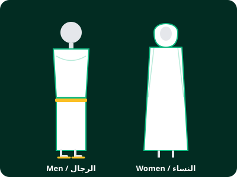
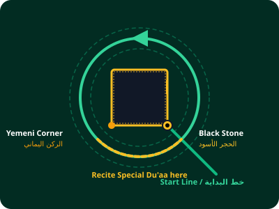
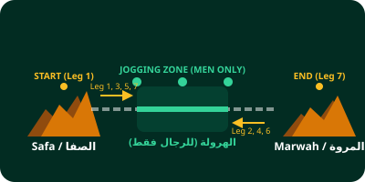
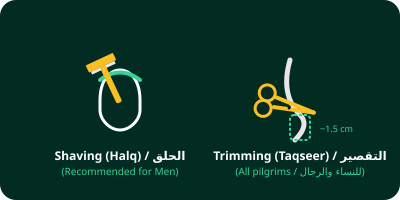

1 التأهب والإحرام
تجهيز الجسد والدخول في نية الإحرام.

النظافة والاغتسال
لباس الرجل
لباس المرأة
دعاء نية العمرة
«لَبَّيْكَ اللَّهُمَّ عُمْرَةً»
Labbayka Allahumma 'Umrah
"Here I am, O Allah, for Umrah."
الاشتراط في النية (إن خفت العائق)
«فَإِنْ حَبَسَنِي حَابِسٌ فَمَحِلِّي حَيْثُ حَبَسْتَنِي»
"If I am prevented by any obstacle, my place is wherever You have prevented me."
التلبية المستمرة
«لَبَّيْكَ اللَّهُمَّ لَبَّيْكَ، لَبَّيْكَ لَا شَرِيكَ لَكَ لَبَّيْكَ، إِنَّ الْحَمْدَ وَالنِّعْمَةَ لَكَ وَالْمُلْكَ، لَا شَرِيكَ لَكَ»
Labbayka Allahumma labbayk, labbayka la sharika laka labbayk. Innal-hamda wan-ni'mata laka wal-mulk, la sharika lak.
"Here I am, O Allah, here I am. Here I am, You have no partner, here I am. Verily all praise and grace are Yours, and the dominion. You have no partner."
2 دخول المسجد الحرام
ادخل المسجد بقدمك اليمنى وقل دعاء الدخول.
«بِسْمِ اللهِ، وَالصَّلَاةُ وَالسَّلَامُ عَلَى رَسُولِ اللهِ، اللَّهُمَّ افْتَحْ لِي أَبْوَابَ رَحْمَتِكَ»
Bismillahi, was-salatu was-salamu 'ala rasulillah. Allahummaftah li abwaba rahmatik.
"In the name of Allah, and prayers and peace be upon the Messenger of Allah. O Allah, open for me the gates of Your mercy."
عند رؤية الكعبة لأول مرة
«اللَّهُمَّ زِدْ هَذَا الْبَيْتَ تَشْرِيفاً وَتَعْظِيماً وَتَكْرِيماً وَمَهَابَةً»
"O Allah, increase this House in honor, reverence, respect, and awe."
الطواف: الشوط 1 من 7
الشوط الحالي
1
المنطقة 1: الحجر الأسود
أشر بيدك وقل الدعاء
«بِسْمِ اللَّهِ وَاللَّهُ أَكْبَرُ»
"Bismillahi wallahu Akbar"
الطواف حول الكعبة
تحضير الرجل: الاضطباع...

بين الركن اليماني والحجر الأسود:
«رَبَّنَا آتِنَا فِي الدُّنْيَا حَسَنَةً وَفِي الْآخِرَةِ حَسَنَةً وَقِنَا عَذَابَ النَّارِ»
"Our Lord, give us in this world [that which is] good and in the Hereafter [that which is] good and protect us from the punishment of the Fire."
السعي: الشوط 1 من 7
من الصفا إلى المروة
الشوط الحالي
1
🟢 الهرولة بين العلمين الأخضرين (للرجال)
«﴿ ۞ إِنَّ الصَّفَا وَالْمَرْوَةَ مِن شَعَائِرِ اللَّهِ ۖ فَمَنْ حَجَّ الْبَيْتَ أَوِ اعْتَمَرَ فَلَا جُنَاحَ عَلَيْهِ أَن يَطَّوَّفَ بِهِمَا ۚ وَمَن تَطَوَّعَ خَيْرًا فَإِنَّ اللَّهَ شَاكِرٌ عَلِيمٌ﴾ [البقرة: 158]»
"Indeed, as-Safa and al-Marwah are among the symbols of Allah. So whoever makes Hajj to the House or performs 'Umrah - there is no blame upon him for walking between them. And whoever volunteers good - then indeed, Allah is appreciative and Knowing." [Al-Baqarah: 158]
السعي بين الصفا والمروة
💡 حكم طهارة السعي والاستراحة
• الطهارة (الوضوء): سنة مستحبة وليست شرطاً لصحة السعي. لو انتقض وضوؤك أثناء السعي فسعيك صحيح وتستمر دون إعادة.
• الموالاة والاستراحة: يسن السعي فور الطواف، ويجوز الفصل بينهما بركعتين، شرب ماء زمزم، أو الاستراحة إن احتجت.
• الموالاة والاستراحة: يسن السعي فور الطواف، ويجوز الفصل بينهما بركعتين، شرب ماء زمزم، أو الاستراحة إن احتجت.
🕋 سنن ودعاء الوقوف على الصفا والمروة:
عند الوصول للصفا (في الشوط الأول فقط) تقرأ: «﴿ ۞ إِنَّ الصَّفَا وَالْمَرْوَةَ مِن شَعَائِرِ اللَّهِ ۖ فَمَنْ حَجَّ الْبَيْتَ أَوِ اعْتَمَرَ فَلَا جُنَاحَ عَلَيْهِ أَن يَطَّوَّفَ بِهِمَا ۚ وَمَن تَطَوَّعَ خَيْرًا فَإِنَّ اللَّهَ شَاكِرٌ عَلِيمٌ﴾ [البقرة: 158] .. أَبْدَأُ بِمَا بَدَأَ اللَّهُ بِهِ».
ثم تصعد الجبل وتستقبل الكعبة وترفع يديك للدعاء وتقول:
ثم تصعد الجبل وتستقبل الكعبة وترفع يديك للدعاء وتقول:
«اللَّهُ أَكْبَرُ، اللَّهُ أَكْبَرُ، اللَّهُ أَكْبَرُ
لَا إِلَهَ إِلَّا اللَّهُ وَحْدَهُ لَا شَرِيكَ لَهُ، لَهُ الْمُلْكُ وَلَهُ الْحَمْدُ، يُحْيِي وَيُمِيتُ، وَهُوَ عَلَى كُلِّ شَيْءٍ قَدِيرٌ، لَا إِلَهَ إِلَّا اللَّهُ وَحْدَهُ، أَنْجَزَ وَعْدَهُ، وَنَصَرَ عَبْدَهُ، وَهَزَمَ الْأَحْزَابَ وَحْدَهُ»
لَا إِلَهَ إِلَّا اللَّهُ وَحْدَهُ لَا شَرِيكَ لَهُ، لَهُ الْمُلْكُ وَلَهُ الْحَمْدُ، يُحْيِي وَيُمِيتُ، وَهُوَ عَلَى كُلِّ شَيْءٍ قَدِيرٌ، لَا إِلَهَ إِلَّا اللَّهُ وَحْدَهُ، أَنْجَزَ وَعْدَهُ، وَنَصَرَ عَبْدَهُ، وَهَزَمَ الْأَحْزَابَ وَحْدَهُ»
(تكرر هذا الذكر 3 مرات وتدعو بما تشاء من خير الدنيا والآخرة بين كل مرة وأخرى).
🟢 الهرولة بين العلمين الأخضرين (للرجال)
يسن للرجال الإسراع في المشي (الهرولة) بين الشاخصين الأخضرين، ويقول أثناءها:
«رَبِّ اغْفِرْ وَارْحَمْ، وَتَجَاوَزْ عَمَّا تَعْلَمُ، إِنَّكَ أَنْتَ الأَعَزُّ الأَكْرَمُ»

📍 مسار الأشواط السبعة ومستحبات نهاية السعي
🚪 دعاء الخروج من المسجد الحرام (بالقدم اليسرى):
«بِسْمِ اللَّهِ، وَالصَّلَاةُ وَالسَّلَامُ عَلَى رَسُولِ اللَّهِ، اللَّهُمَّ إِنِّي أَسْأَلُكَ مِنْ فَضْلِكَ»
5 التحلل من الإحرام (الحلق أو التقصير)
📜 فضل الحلق في السنة النبوية
«اللَّهُمَّ اغْفِرْ لِلْمُحَلِّقِينَ»
قَالُوا: وَلِلْمُقَصِّرِينَ يَا رَسُولَ اللَّهِ؟ قَالَ: «اللَّهُمَّ اغْفِرْ لِلْمُحَلِّقِينَ»، قَالُوا: وَلِلْمُقَصِّرِينَ يَا رَسُولَ اللَّهِ؟ قَالَ: «وَلِلْمُقَصِّرِينَ» (دعا النبي ﷺ للمحلقين بالمغفرة ثلاث مرات وللمقصرين مرة).

✂️ أحكام الحلق والتقصير للرجال
✂️ أحكام تقصير الشعر للنساء
عمرة مقبولة وتامة!
بعد الحلق أو التقصير يتحلل المحرم تحللاً كاملاً، وتحل له جميع محظورات الإحرام (خلع ملابس الإحرام، الطيب، قص الأظافر، ولبس الثياب المخيطة). تقبل الله طاعتكم!
📍 أماكن صالونات الحلاقة: تتوفر صالونات معتمدة خارج باب المروة، وأبراج زمزم، والصفوة، ومجمع هيلتون.
🕌 العمرة الثانية: من رغب بطلب عمرة أخرى، يتجه خارج أدنى الحل إلى مسجد عائشة رضي الله عنها بالتنعيم للإحرام مجدداً.
🕌 العمرة الثانية: من رغب بطلب عمرة أخرى، يتجه خارج أدنى الحل إلى مسجد عائشة رضي الله عنها بالتنعيم للإحرام مجدداً.